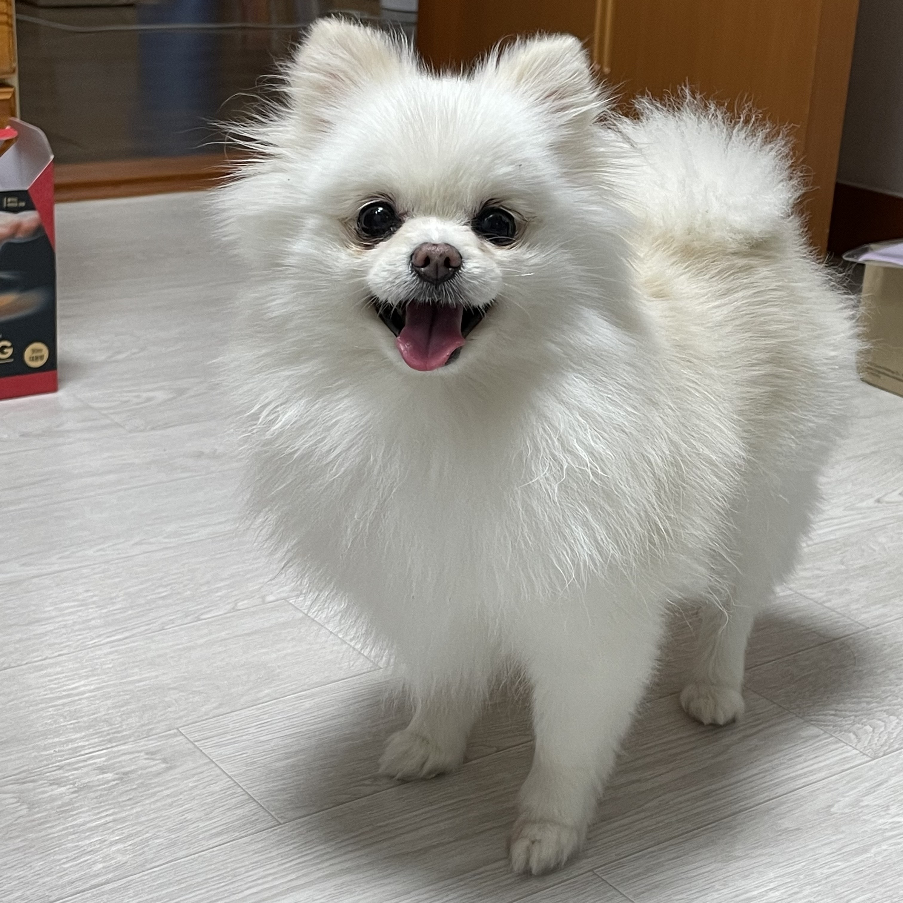

영리하고 체구에 비해 대범한 성격을 갖고 있고 호기심도 많다. 욕심과 애교가 많아 항상 주인을 독차지하려고 한다. 귀여운 외모에 비해 튼튼하고 활발하며 활동량이 많아 어린아이의 훌륭한 친구가 될 수 있다. 잘 짖는 편이라서 짖지 못하도록 미리 훈련시켜야 한다. 고집이 센 편이어서 응석을 너무 받아주면 귀여운 악동이 될 가능성이 높다. [네이버 지식백과] 포메라니안 [Pomeranian] (강아지 기르기, 2004. 9. 10., 이은숙)
